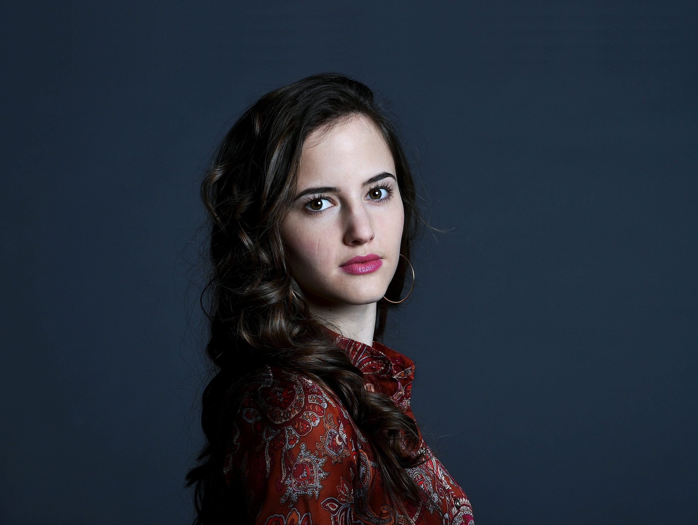
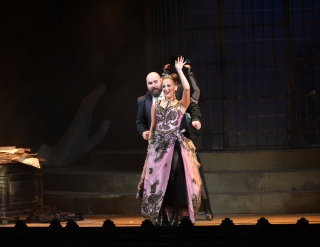
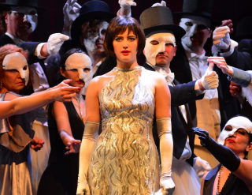
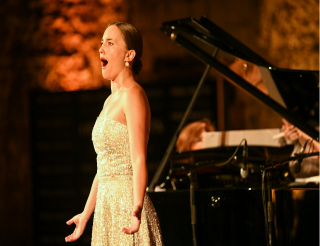
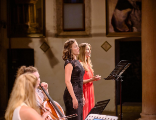
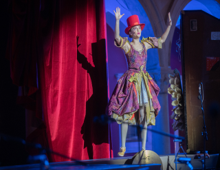
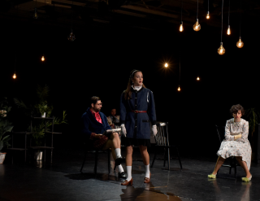
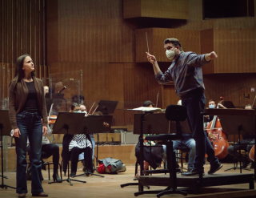
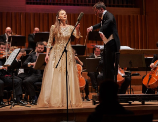

GALLERY

Johan Strauss II: Die Fledermaus (Adele)
Croatian Nation Theatre Zagreb, 2023

Emmerich Kálmán Gräfin Mariza
Komedija Theatre Zagreb, 2022

14th Opera Selecta Festival, 2022

47th Osor Musial Evenings, Trio Eusebius, 2022
Sarajevo Philharmonic Orchestra, maestro Josip Šego
Sarajevo National Theatre, 2022

63d International Childern Festival in Šibenik
Orchestra at last! (Show for childern), 2022

Engelbert Humperdinck: Hansel and Gretel (Gretel)
Vatroslav Lisinski Concert Hall Zagreb, 2021

Aleksandar Švabić and Zrinska Posavec: The Bald
soprano
Chamber opera inspired by Eugène Ionesco's drama), Zagreb,
2021’

HRT Symphony Orchestra, maestro Pavle Zajcev
Vatroslav Lisinski Concert Hall Zagreb, 2020

Zagreb Philharmonic Orchestra, maestro Tomislav
Fačini
Vatroslav Lisinski Concert Hall Zagreb, 2020